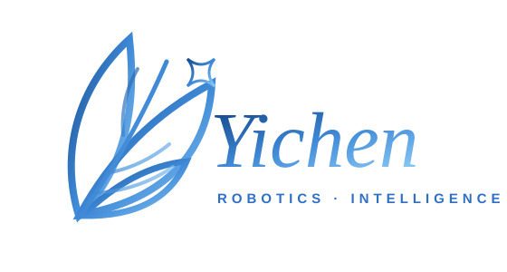
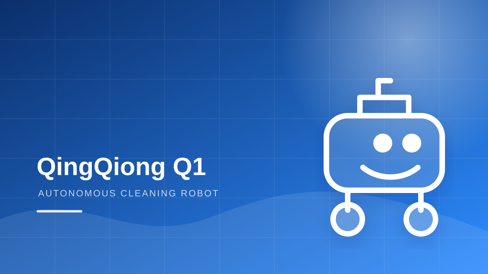
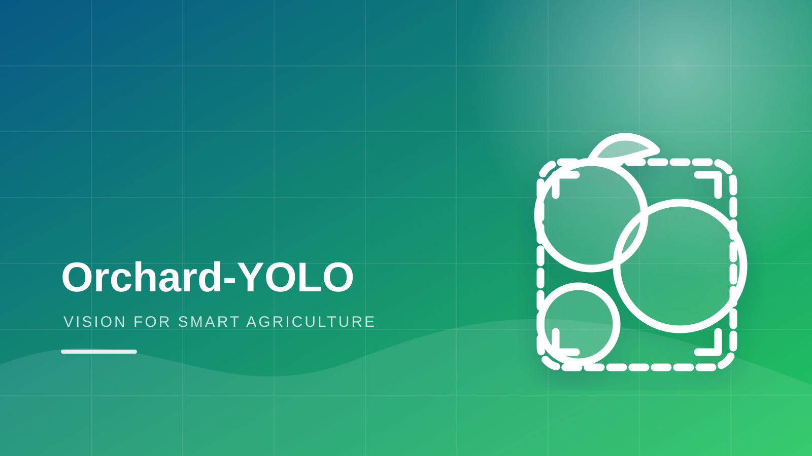
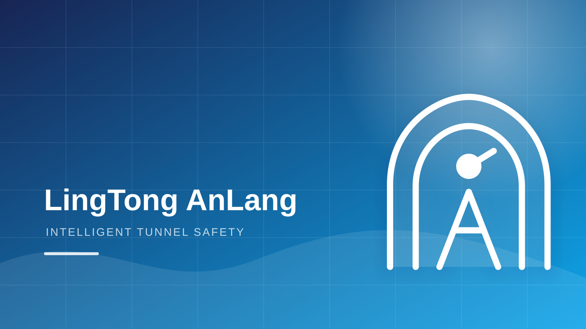

Shanghai Ocean University, Shanghai
B.Eng. Candidate in Mechanical Design, Manufacturing and Automation
ROBOTICS · EMBODIED AI · COMPUTER VISION
College of Engineering,
Shanghai Ocean University
GitHub: Eason-Yeager
Email: 3036063265@qq.com

Hello! I am an undergraduate student majoring in Mechanical Design, Manufacturing and Automation at Shanghai Ocean University. My interests lie at the intersection of embodied intelligence, autonomous robotics, computer vision and AI for Science.
I enjoy turning research ideas into complete engineering systems—from mechanical design, sensor integration and embedded control to ROS2 simulation, perception algorithms and real-world deployment. My recent work covers autonomous cleaning robots, orchard visual perception, railway-tunnel intelligent monitoring and multimodal AI agents.
Feel free to contact me if you are interested in discussing robotics, computer vision or interdisciplinary engineering projects.
B.Eng. Candidate in Mechanical Design, Manufacturing and Automation
High School Diploma

Project Lead · Embodied AI / Autonomous Robotics
A campus-oriented autonomous cleaning robot integrating ROS 2, LiDAR SLAM, Nav2, visual perception, voice interaction and robotic manipulation. The project emphasizes a complete simulation-to-real deployment workflow.
ROS 2 · SLAM Toolbox · Nav2 · Livox Mid-360 · J6M · Robotic Arm

First Author · Computer Vision / Edge AI
A lightweight fruit and maturity detection framework designed for illumination variation, foliage occlusion and small targets in orchard environments, with a planned deployment workflow for Jetson-class edge devices.
Python · PyTorch · YOLO · OpenCV · Coordinate Attention · GhostConv

Project Lead · Intelligent Sensing / Embedded Systems
An intelligent monitoring system combining night-time animal detection, environmental sensing, edge computing, wireless communication and active deterrence in a closed perception–decision–intervention loop.
Raspberry Pi 5 · YOLO · Night Vision · Environmental Sensors · IoT
Product & AI Agent Project
An AI decision assistant for content-commerce beginners, supporting product understanding, profit estimation, risk judgment, small-scale testing and data-driven review through multimodal models and rule-based tools.
AI Agent · Multimodal LLM · React · Product Design · Rule Engine